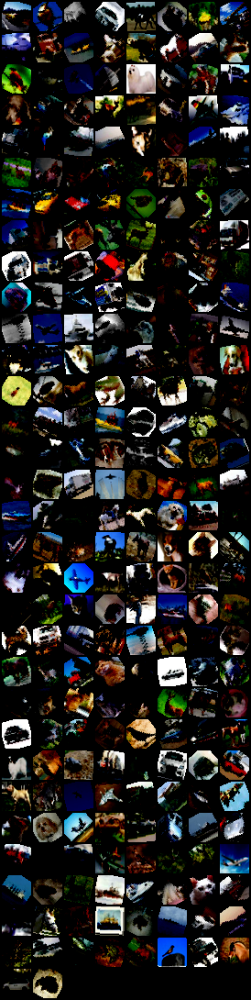
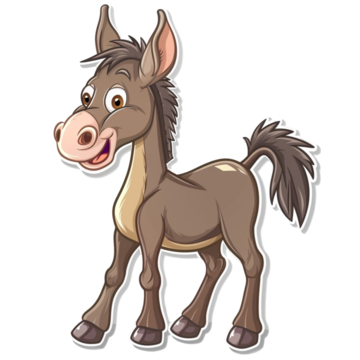
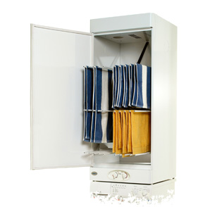

Présentation et description des images
Image naturelle – Plage

Image représentant une plage ensoleillée, avec une étendue de sable clair
bordée par la mer. L’horizon dégagé et les vagues calmes créent une atmosphère
paisible, typique d’une scène estivale en bord de mer.
Image annotée – Dataset COCO / COCOR

Image issue d’un dataset de vision par ordinateur de type COCO / COCOR,
représentant une scène du quotidien avec plusieurs objets annotés pour la
détection et l’analyse visuelle.
Objets annotés :
- person : individu présent dans la scène
- car : véhicule visible en arrière-plan
- bicycle : vélo situé à proximité
- traffic light : feu de signalisation
Image de poker

Image illustrant une scène de poker, avec des cartes et des jetons disposés
sur une table de jeu. Elle évoque un contexte de jeu, de stratégie et de hasard.
Image animale – Âne

Image représentant un âne, animal domestique reconnaissable par sa silhouette,
ses longues oreilles et son pelage. La scène est simple et naturelle.
Image technique – Laboratoire
Image montrant un laboratoire, avec du matériel scientifique et technique.
Elle illustre un environnement de travail dédié à l’expérimentation,
à la recherche ou à l’enseignement scientifique.
Image d’intérieur – Placard

Image représentant un placard ou un espace de rangement intérieur,
utilisé pour stocker des objets du quotidien dans un environnement domestique.
Document – Curriculum Vitae

Image représentant un curriculum vitae (CV), présentant le parcours
académique, les compétences et les expériences professionnelles d’une personne.